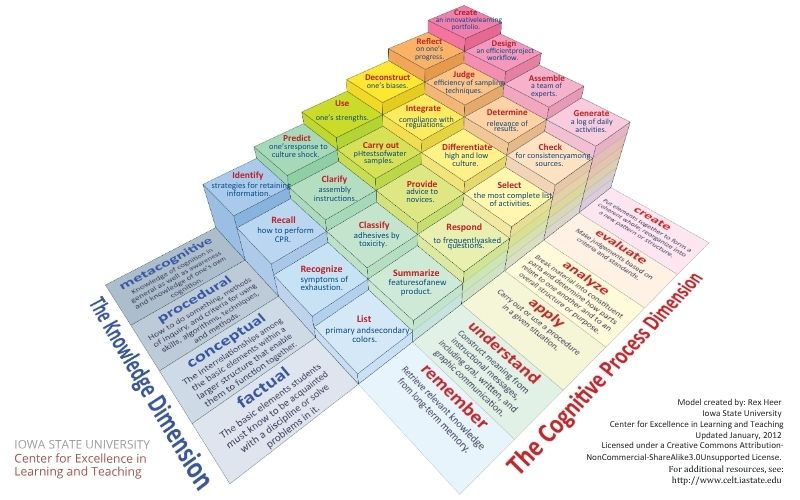
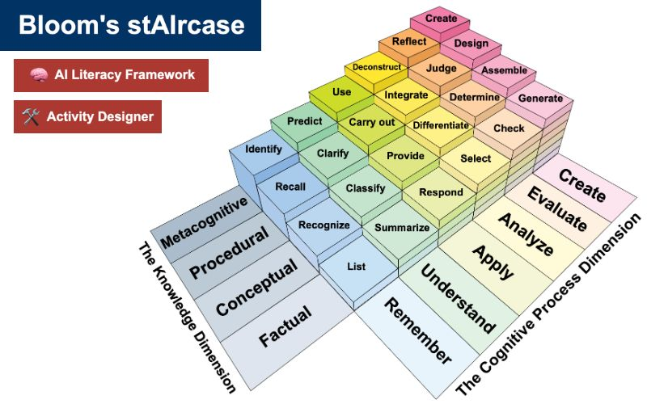
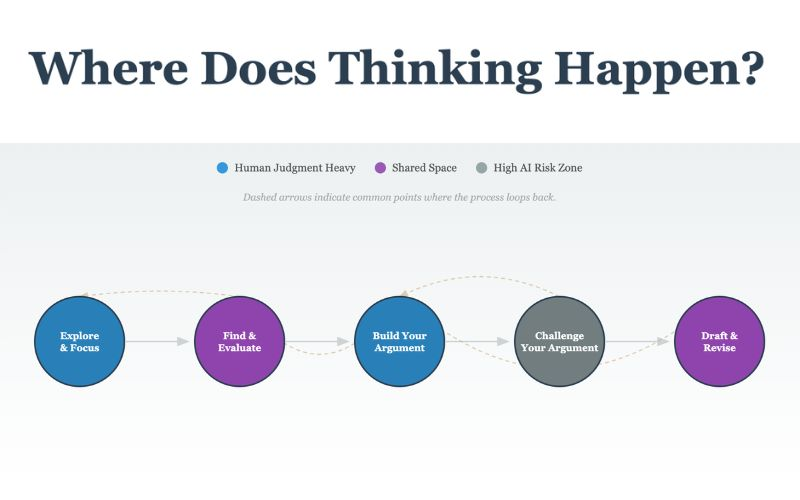

OpenCon Ohio · 2026
Nicole Baker, MSLIS, MSEd · Case Western Reserve University
Generative AI in your work. One word.
Competing priorities. Constant change. No time to start over.
The landscape
without overhauling courses or abandoning pedagogical values.
while AI tools reshape how students learn faster than we can evaluate them.
References
Hill, R. (2023). AI as fad or AI as lasting? Priorities for college faculty instructional development for generative artificial intelligence. Irish Journal of Technology Enhanced Learning,7(2), 136-145.
Theelen, H., Canisius, E., & Lambert, G. (2025). The relationship between instructional strategies and cognitive activation in higher education: A student persepctive.Active Learning in Higher Education, 26(3), 521-541.
Zawacki-Richter, O., Marin, V. I., Bond, M., & Gouverneur, F. (2019). Systematic review of research on artificial intelligence applications in higher education - where are the educators? International Journal of Educational Technology in Higher Education, 16(1).
A tradition of sharing. And a new set of possibilities.
Open educational practice
The belief that knowledge should be accessible. Platforms like OER Commons and Pressbooks. Creative Commons licensing. The 5Rs: retain, reuse, revise, remix, redistribute.
AI extends what one person can create — but without intentional, human-centered evaluation, it produces noise. We need to lead how these tools are used, not just adopt them.
References
Barker, P., & Campbell, L. M. (2016). Open Education.
Mills, A., Bali, M., & Eaton, L. (2023). How do we respond to generative AI in education? Open educational practices give us a framework for an ongoing process.Journal of Applied Learning & Teaching, 6(1).
Orzech, M. J., Zhang, J., Orzel, V., Sultana, S., Thompsell, A., Wood, J., & Ning, Y. (2025). All about OER - Why, what, how, and so what: A colective case study.Journal of Educational Technology Systems, 53(3), 242-259.
UNESCO. (2019). Recommendation on Open Educational Resources (OER).
Wiley, D. (2014, March). The Access Compromise and the 5th R.
Multimedia learning theory
Click cards to reveal sample prompts
Multimedia Learning Theory
Cavanagh, T. M. & Kiersch, C. E. (2023). Using commonly-available technologies to create online multimedia lessons through the application of Cognitive Theory of Multimedia Learning. Educational Technology Research and Development, 71(3), 1033-1053.
Fyfield, M., Genderson, M., & Phillips, M. (2019). 25 principles for effective instructional video design. Proceedings of Australasian Society for Computers in Learning in Tertiary Education Annual Conference 2019: Diverse Learning. Diverse Goals. One Heart..
Mayer, R. E. (2017). Using multimedia for e-learning. Journal of Computer Assisted Learning, 33(5), 403-423.
Noetel, M., Griffith, S., Delaney, O., Harris, N. R., Sanders, T., Parker, P., ... & Lonsdale, C. (2022). Multimedia design for learning: An overview of reviews with meta-meta-analysis. Review of Educational Research, 92(3), 413-454.
MLT in practice
Where in the research process are you using AI?
What thinking happens at each stage?
Select a stage. Reflect on what you're doing — and what you might hand off. One step at a time.
✓ Segmented · ✓ Signaled · ✓ Coherent · ✓ Learner-paced
AI lowers the barriers. Open licensing shares the result.
Vibe coding
Code, websites, tools — minimal prior experience needed.
AI works best alongside established open communities.
Built for your context. Then shared openly.
Use case
Students use Generative AI all semester.
The assignment: use and evaluate generative AI in an argumentative research essay.
From prompt to pedagogy
Students will evaluate AI-generated sources for credibility.
First-year undergraduates with a mix of prior AI experience. Philosophy majors.
Students identify which cognitive steps they delegated to AI and why.
Include a metacognitive checkpoint: "What would change if you did this step without AI?"
Screen-reader compatible, adjustable pacing. CC BY 4.0 for sharing and remixing.
The thinking map tool

Prompts reflection on AI use at each stage of the research process. Invites intentionality about what cognitive work might be lost. Adaptable to any context or AI policy.
Launch tool ↗MLT in action
Vibe coding and learning out loud.
Faculty need — activities covering content + AI literacy +
Bloom's StAIrcase — Bloom's, UDL, and digital literacy +
Iterate — ChatGPT → Claude. Mistakes are part of it +
Skill building — SVG, GitHub, a whole new world +
MLT in prompts — tell AI to segment, signal, and cut +
Be open to the journey not being perfect.
Your turn
What was the topic? Drop it in the chat.
Why now
Custom tools for your exact students. Shared openly for others to adapt.
Required coding expertise or years with the same students. AI changes the equation.
References
Bozkurt, A. (2023). Generative AI, synthetic contents, open educational resources (OER), and open educational practices (OEP): A new front in the openness landscape. Open Praxis, 15(3), 178-184.
Rampelt, F., Ruppert, R., Schleiss, J., Mah, D. K., Bata, K., & Egloffstein, M. (2025). How do AI educators use open educational resources?: A cross-sectoral case study on OER for AI education. Open Praxis, 17(1), 46-63.
Tlili, A., & Burgos, D. (2024). Unleashing the power of Open Educational Practices (OEP) through Artificial Intelligence (AI): Where to begin?. Interactive Learning Environments, 32(10), 6886-6893.
Vibe coding in action
A well-designed PDF of Bloom's Taxonomy. Widely used. Not interactive. Difficult to adapt.
Interactive, web-based, shared under Creative Commons. Explorable, adaptable, remixable.
Static OER can become interactive tools shared under CC licenses — vibe coding makes it possible.
This presentation, the thinking map tool, and Bloom's StAIrcase — remixable, all on GitHub.
What's next
Take a teaching frustration and describe it to an AI tool. Include one MLT principle. See what comes back.
Visit the resource list from today. Fork something. Change one thing. See how it feels.
If you build something — even something small — share it openly. Add a CC license. Put it where others can find it.
Let's keep building and sharing openly.
Slides
This presentation was vibe-coded with generative AI
and is openly available.
Built with reveal.js · Hosted on GitHub
Press R on any slide to view its source code.
Interactive features: MLT explorer, before/after demo, prompt layering,
expandable talking points, citation drawers, comparison viewer,
build timer, and confetti. All vibe-coded.